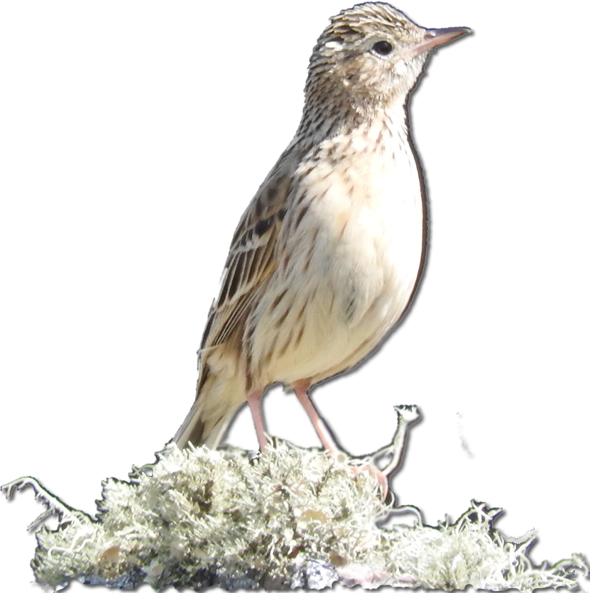

Es un área protegida privada destinada voluntariamente a la conservación de la naturaleza y/o al uso sustentable de sus recursos naturales.
Este proceso es impulsado por los propietarios, a menudo con el acompañamiento de organismos gubernamentales u organizaciones ambientales que identifican terrenos con alto valor para la conservación.
Las Piedras fue declarada reserva en marzo de 2022 y reconocida de interés municipal en octubre del mismo año.
Forma parte de la Red Argentina de Reservas Naturales Privadas (RARNAP), una asociación civil que reúne a propietarios de reservas y técnicos de todo el país. Su propósito es fortalecer, integrar y expandir iniciativas voluntarias de conservación y uso sustentable de la biodiversidad y el patrimonio cultural en tierras privadas en Argentina.
Actualmente, la provincia de Buenos Aires tiene un nodo que nuclea 16 reservas privadas y cuatro organizaciones de la sociedad civil: Fundación Vida Silvestre, Fundación Temaikèn, Fundación Félix de Azara y Asociación Aves Argentinas.

Uno de nuestros principales objetivos es cuidar el pastizal serrano y promover la agroecología como una forma de producir en armonía con la naturaleza.
Contamos con 535 hectáreas donde cultivamos cereales y forrajes con prácticas agroecológicas que cuidan la vida del suelo. También criamos ganado bajo principios de agroecología y ganadería regenerativa, que ayudan a restaurar la tierra y reducir el impacto ambiental.
La reserva es administrada por Mariana Gonzales Chaves, artista plástica y productora diplomada en agroecología, quien también fundó y dirige Pastizal, un programa de residencias que combina arte y ciencia.
Las Piedras cuenta con el acompañamiento de un equipo interdisciplinario, integrado por profesionales, instituciones y actores sociales. A través de múltiples actividades vinculadas a la conservación, la producción y la gestión cultural, la reserva se consolida como un espacio vivo de encuentro entre conocimiento, creatividad y naturaleza.